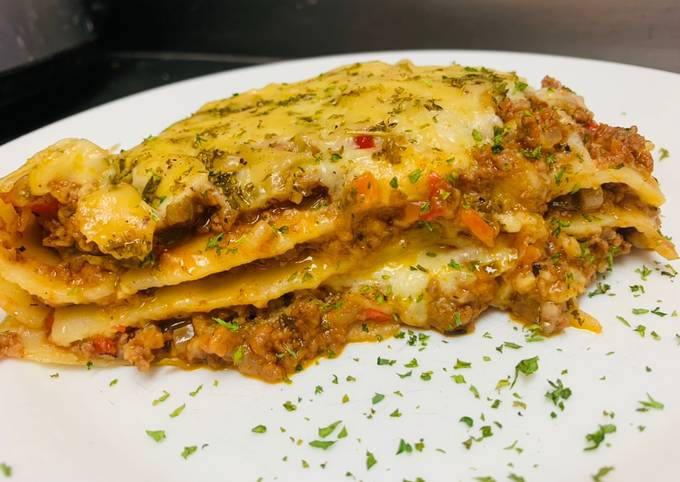

Lasagna

Deskripsi
Lasagna atau lasagne adalah pasta yang dipanggang di oven dan merupakan makanan tradisional Italia.
Lasagna sendiri secara harfiah adalah lasagne yang berisikan daging.
Lasagna sendiri dapat diisi dengan banyak isian lainnya seperti daging, sayur-sayuran, ayam, makanan laut
dan sebagainya sesuai selera.
Bahan-bahan
- 1 buah wortel
- 1 buah bawang bombai
- 4 batang sledri
- 1/2 buah paprika merah
- 1/2 buah paprika hijau
- 300 gram daging giling
- 2 sdm tomato paste
- 1/2 sdt garam
- 1/2 sdt merica
- 1/2 sdt kaldu bubuk rasa sapi
- 1 sdt oregano
- 1 sdt basil kering
- 1 lembar daun bay leaf
- 200 gram keju mozzarella
- Secukupnya kulit pasta lasagna
- 3 sdm mentega / margarin
- 3 sdm tepung terigu
- 200 ml susu cair
- 1/4 sdt garam
- 1/4 sdt merica
Cara Membuat
- Siapkan wortel, bombai, sledri dan paprika potong kecil dan sisihkan dalam wadah, lalu Siapkan daging
giling.
Panaskan panci dan tumis daging giling tanpa minyak karena daging giling akan mengeluarkan minyak dan
kuah / air.
Tumis sampai daging giling berubah warna dan matang.
-
Kemudian masukan potongan sayuran, aduk dan tumis sampai sayuran matang.
Kemudian masukan tomato paste atau anda bisa menggunakan tomat saus sesuai selera, tambah sedikit air
kira-kira 150 ml, masak sampai mendidih Kemudian tambahkan garam, merica, kaldu bubuk, oregano basil dan
bay leaf.
Aduk dan masak sampai mengental.
Kemudian angkat dan sisihkan dalam wadah.
-
Kemudian Siapkan mentega atau margarin dan tepung terigu di wadah terpisah 1:1.
Lalu panaskan mentega dan masukan tepung terigu sedikit demi sedikit sambil terus di aduk, sampai
mentega dan tepung menjadi ruh.
-
Kemudian masukan 200 ml susu cair uht, aduk perlahan sampai mengental dan menjadi saus buchamel.
Tambahkan sedikit garam, merica untuk rasa.
Aduk sampai tercampur rata Kemudian matikan api dan sisihkan.
Kemudian Siapkan kulit pasta lasagna.
-
Rebus kulit pasta lasagna setengah matang, kemudian sisihkan.
Lalu Siapkan loyang dan susun kulit lasagna di loyang untuk lapisan pertama.
Lalu taruh secukupnya daging giling yang sudah di masak tadi ratakan menggunakan sendok.
-
Kemudian tambahkan saus buchamel secukup nya dan rata kan menggunakan sendok.
Lalu susun kembali kulit lasagna untuk lapisan kedua.
Lakukan hal yang sama sampai lapisan lasagna yang di inginkan selesai.
Untuk lapisan sesuai selera. Bisa 3 lapis atau 4 lapis.
- Kemudian terakhir taruh keju parut di atas nya sebagai toping, untuk keju sesuai selera. Tambahkan
sedikit parsley. Kemudian oven selama 45 menit dengan suhu 250. Atau sampai matang. Setelah matang
keluarkan dari dalam oven, taruh di suhu ruang.
-
Potong sesuai selera, kemudian sajikan.
Back To Top
Back To Home Page